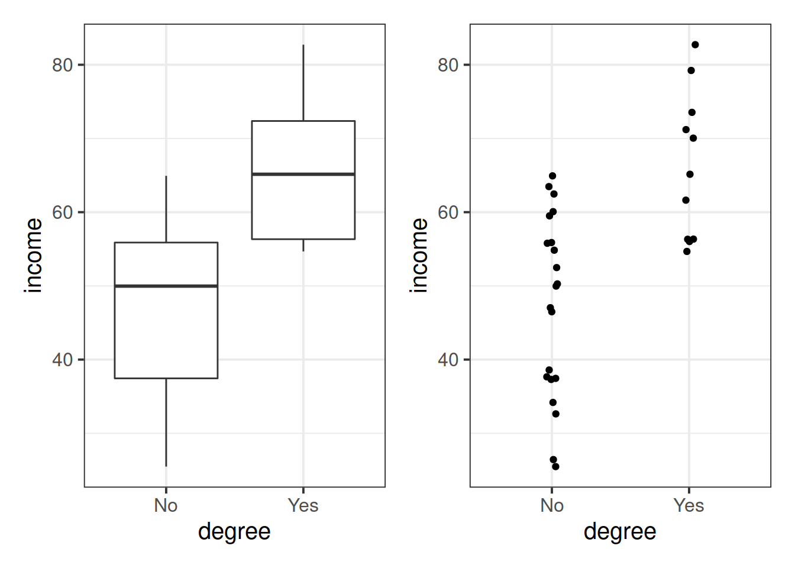
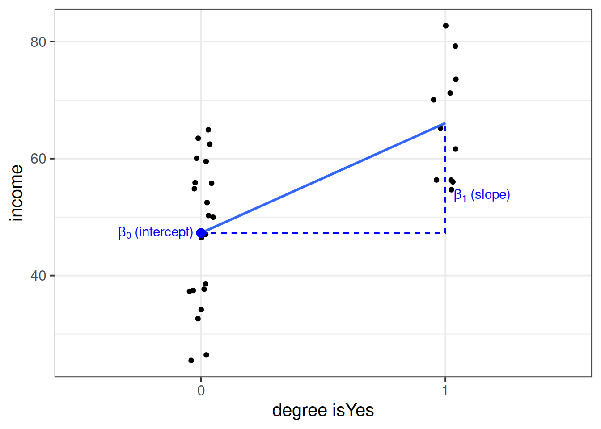
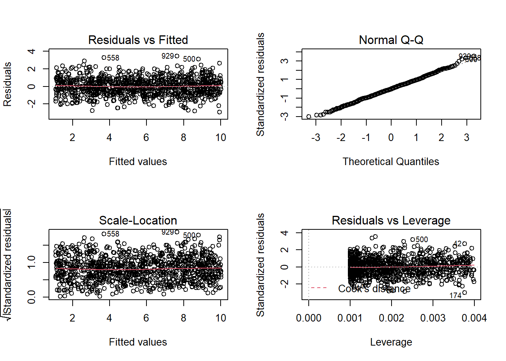
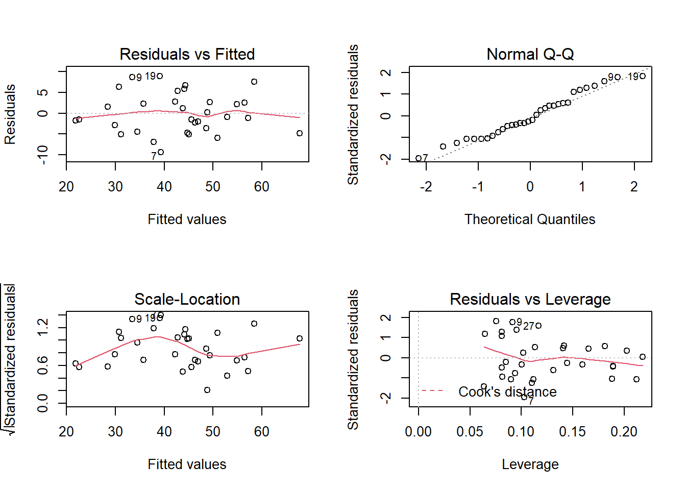

Linear Regression
This lab is a long one! It takes us quite slowly through simple and multiple regression, but the broader ideas being introduced are actually quite simple - we are just drawing a straight line through some datapoints!
Try to take regular breaks during these exercises. This will help (a bit) with not getting overwhelmed - these things (both the statistics side and the programming side) take time - and repeated practice - to sink in.

Simple regression
Data: riverview.csv
Let’s imagine a study into income disparity for workers in a local authority. We might carry out interviews and find that there is a link between the level of education and an employee’s income. Those with more formal education seem to be better paid. Now we wouldn’t have time to interview everyone who works for the local authority so we would have to interview a sample, say 10%.
In this next set of exercises we will use the riverview data, which come from Lewis-Beck, 2015 and contain five attributes collected from a random sample of \(n=32\) employees working for the city of Riverview, a hypothetical midwestern city in the US. The attributes include:
education: Years of formal educationincome: Annual income (in thousands of U.S. dollars)seniority: Years of senioritygender: Employee’s gendermale: Dummy coded gender variable (0 = Female, 1 = Male)party: Political party affiliation
Preview
The first six rows of the data are:
| education | income | seniority | gender | male | party |
|---|---|---|---|---|---|
| 8 | 37.449 | 7 | male | 1 | Democrat |
| 8 | 26.430 | 9 | female | 0 | Independent |
| 10 | 47.034 | 14 | male | 1 | Democrat |
| 10 | 34.182 | 16 | female | 0 | Independent |
| 10 | 25.479 | 1 | female | 0 | Republican |
| 12 | 46.488 | 11 | female | 0 | Democrat |
The data is available at https://uoepsy.github.io/data/riverview.csv.
Load the required libraries (probably just tidyverse for now), and read in the riverview data to your R session.
I’m going to name it riverview in my environment.
Exploring the data
Probably the first port of call for almost any statistical analysis is to just explore the data and make sure that things look as you would expect them to look. We can do this visually, or numerically, using the skills we saw in weeks 1 and 2.
Let us first visualise and describe the marginal distributions of those variables which are of interest to us. These are the distribution of each variable (employee incomes and education levels) without reference to the values of the other variables.
- You could use, for example,
geom_density()for a density plot orgeom_histogram()for a histogram. - Look at the shape, center and spread of the distribution. Is it symmetric or skewed? Is it unimodal or bimodal?
- Do you notice any extreme observations?
After we’ve looked at the marginal distributions of the variables of interest in the analysis, we typically move on to examining relationships between the variables.
Visualise and describe (just in words) the relationship between income and level of education among the employees in the sample.
Think about:
- Direction of association
- Form of association (can it be summarised well with a straight line?)
- Strength of association (how closely do points fall to a recognizable pattern such as a line?)
- Unusual observations that do not fit the pattern of the rest of the observations and which are worth examining in more detail.
To comment numerically on the strength of the linear association we might compute the correlation coefficient that we were introduced to in Week 5:
riverview %>%
select(education, income) %>%
cor()## education income
## education 1.0000000 0.7947847
## income 0.7947847 1.0000000that is, \[ r_{\text{education, income}} = 0.79 \]
Fitting a Linear Model
The plot created in the previous question highlights a linear relationship, where the data points are scattered around an underlying linear pattern with a roughly-constant spread as x varies.
We will try to fit a simple (one explanatory variable only) linear regression model:
\[ Income = b_0 + b_1 \ Education + \epsilon \quad \\ \text{where} \quad \epsilon \sim N(0, \sigma) \text{ independently} \]
where “\(\epsilon \sim N(0, \sigma) \text{ independently}\)” means that the errors around the line have mean zero and constant spread as x varies (we’ll read more about what this means later in this lab in the section on Making Valid Inferences).
To fit linear models, we use the lm() function.
The syntax of the lm() function is:
[model name] <- lm([response variable] ~ 1 + [explanatory variable], data = [dataframe])Why ~1?
The fitted model can be written as
\[
\hat y = \hat b_0 + \hat b_1 (x)
\]
The predicted values for the outcome are equal to our intercept, \(\hat b_0\), plus our slope \(\hat b_1\) multiplied by the value on our explanatory variable \(x\).
The intercept is a constant. That is, we could write it as multiplied by 1:
\[
\hat y = \color{blue}{\hat b_0}(\color{green}{1})\color{blue}{ + \hat b_1 }(\color{green}{x})
\]
When we specify the linear model in R, we include after the tilde sign ~ all the things which appear to the right of each of the \(\hat b\)s (the bits in green in the equartion above). That’s why the 1 is included. It is just saying “we want the intercept, \(b_0\), to be estimated.”
Using the lm() function, fit a linear model to the sample data, in which employee income is explained by education level. Assign it to a name to store it in your environment.
Interpreting coefficients
Interpret the estimated intercept and slope in the context of the question of interest.
Let’s suppose we assigned our linear model object to the name “model1” in R. To obtain the estimated regression coefficients we can use it’s name in various ways and with various functions.
- type
model1, i.e. simply invoke the name of the fitted model; - type
model1$coefficients; - use the
coef(model1)function; - use the
coefficients(model1)function; - use the
summary(model1)function and look under the “Estimate” column.
The estimated parameters returned by the above methods are all equivalent. However, summary() returns more information and you need to look under the column “Estimate.”
Interpreting \(\sigma\)
The parameter estimates from our simple linear regression model take the form of a line, representing the systematic part of our model \(b_0 + b_1 \ x\), which in our case is \(11.32 + 2.65 \ Education\). Deviations from the line are determined by the random error component \(\hat \epsilon\), or “residuals” (the red lines in Figure 4 below).
Figure 4: Simple linear regression model, with systematic part of the model in blue and residuals in red
We use \(\sigma\) to denote the standard deviation of all the residuals
Consider the following:
- In fitting a linear regression model, we make the assumption that the errors around the line are normally distributed around zero (this is the \(\epsilon \sim N(0, \sigma)\) bit.)
- About 95% of values from a normal distribution fall within two standard deviations of the centre.
We can obtain the estimated standard deviation of the errors (\(\hat \sigma\)) from the fitted model using sigma() and giving it the name of our model.
What does this tell us?
Fitted and predicted values
To compute the model-predicted values for the data in the sample we can use various functions. Again, if our model object is named “model1” in our environment, we can use:
predict(model1)fitted(model1)fitted.values(model1)model1$fitted.values
For example, this will give us the estimated income (point on our regression line) for each observed value of education level.
predict(model1)## 1 2 3 4 5 6 7 8
## 32.53175 32.53175 37.83435 37.83435 37.83435 43.13694 43.13694 43.13694
## 9 10 11 12 13 14 15 16
## 43.13694 48.43953 48.43953 48.43953 51.09083 53.74212 53.74212 53.74212
## 17 18 19 20 21 22 23 24
## 53.74212 53.74212 56.39342 59.04472 59.04472 61.69601 61.69601 64.34731
## 25 26 27 28 29 30 31 32
## 64.34731 64.34731 64.34731 66.99861 66.99861 69.64990 69.64990 74.95250We can also compute model-predicted values for other (unobserved) data:
# make a tibble/dataframe with values for the predictor:
education_query <- tibble(education = c(11, 18, 50))
# model predicted values of income, for the values of education
# inside the "education_query" data
predict(model1, newdata = education_query)## 1 2 3
## 40.48564 59.04472 143.88621Compute the model-predicted income for someone with 1 year of education.
Given that our fitted model takes the form:
\[ Income = 11.32 + 2.65\cdot Education \] How can we get to this same answer manually?
Inference for regression coefficients

Figure 5: Estimates without inference
To quantify the amount of uncertainty in each estimated coefficient that is due to sampling variability, we use the standard error (SE) of the coefficient. Recall that a standard error gives a numerical answer to the question of how variable a statistic will be because of random sampling.
The standard errors are found in the column “Std. Error” of the summary() of a model:
## Estimate Std. Error t value Pr(>|t|)
## (Intercept) 11.321379 6.1232350 1.848921 7.434602e-02
## education 2.651297 0.3696232 7.172972 5.562116e-08In this example the slope, 2.651, has a standard error of 0.37. One way to envision this is as a distribution. Our best guess (mean) for the slope parameter is 2.651. The standard deviation of this distribution is 0.37, which indicates the precision (uncertainty) of our estimate.
Figure 6: Sampling distribution of the slope coefficient. The distribution is approximately bell-shaped with a mean of 2.651 and a standard error of 0.37.
We can perform a test against the null hypothesis that the estimate is zero. Our test statistic:
The reference distribution in this case is a t-distribution with \(n-2\) degrees of freedom, where \(n\) is the sample size, and our test statistic is:
\[
t = \frac{\hat b_1 - 0}{SE(\hat b_1)}
\]
Test the hypothesis that the population slope is zero — that is, that there is no linear association between income and education level in the population.
(Hint: you don’t need to do anything for this, you can find all the necessary information in summary() of your model)

Model evaluation
Partitioning variation: \(R^2\)
We might ask ourselves if the model is useful. To quantify and assess model utility, we split the total variability of the response into two terms: the variability explained by the model plus the variability left unexplained in the residuals.
\[ \text{total variability in response = variability explained by model + unexplained variability in residuals} \]
Each term is quantified by a sum of squares:
\[ \begin{aligned} SS_{Total} &= SS_{Model} + SS_{Residual} \\ \sum_{i=1}^n (y_i - \bar y)^2 &= \sum_{i=1}^n (\hat y_i - \bar y)^2 + \sum_{i=1}^n (y_i - \hat y_i)^2 \\ \quad \\ \text{Where:} \\ y_i = \text{observed value} \\ \bar{y} = \text{mean} \\ \hat{y}_i = \text{model predicted value} \\ \end{aligned} \]
The R-squared coefficient is defined as the proportion of the total variability in the outcome variable which is explained by our model:
\[
R^2 = \frac{SS_{Model}}{SS_{Total}} = 1 - \frac{SS_{Residual}}{SS_{Total}}
\]
What is the proportion of the total variability in incomes explained by the linear relationship with education level?
Hint: The question asks to compute the value of \(R^2\), but you might be able to find it already computed somewhere (so much stuff is already in summary() of the model.
Testing Model Utility: \(F\) Statistic
To test if the model is useful — that is, if the explanatory variable is a useful predictor of the response — we test the following hypotheses:
\[ \begin{aligned} H_0 &: \text{the model is ineffective, } b_1 = 0 \\ H_1 &: \text{the model is effective, } b_1 \neq 0 \end{aligned} \] The relevant test-statistic is the F-statistic:
\[ \begin{split} F = \frac{MS_{Model}}{MS_{Residual}} = \frac{SS_{Model} / 1}{SS_{Residual} / (n-2)} \end{split} \]
which compares the amount of variation in the response explained by the model to the amount of variation left unexplained in the residuals.
The sample F-statistic is compared to an F-distribution with \(df_{1} = 1\) and \(df_{2} = n - 2\) degrees of freedom.1
Look at the output of summary() of your model. Identify the relevant information to conduct an F-test against the null hypothesis that the model is ineffective at predicting income using education level.
Binary predictors
Let’s suppose that instead of having measured education in years, we had data instead on “Obtained College Degree: Yes/No.” Our explanatory variable would be binary categorical (think back to our discussion of types of data).
Let us pretend that everyone with >18 years of education has a college degree:
riverview <-
riverview %>%
mutate(
degree = ifelse(education > 18, "Yes", "No")
)We may then plot our relationship as a boxplot. If you want to see the individual points, you could always “jitter” them (right-hand plot below)
ggplot(riverview, aes(x = degree, y = income)) +
geom_boxplot() +
ggplot(riverview, aes(x = degree, y = income)) +
geom_jitter(height=0, width=.05)
Binary predictors in linear regression
We can include categorical predictors in a linear regression, but the interpretation of the coefficients is very specific. Whereas we talked about coefficients being interpreted as “the change in \(y\) associated with a 1-unit increase in \(x\),” for categorical explanatory variables, coefficients can be considered to examine differences in group means. However, they are actually doing exactly the same thing - the model is simply translating the levels (like “Yes”/“No”) in to 0s and 1s!
So while we may have in our dataframe a categorical predictor like the middle column “degree,” below, what is inputted into our model is more like the third column, “isYes.”
## # A tibble: 32 × 3
## income degree isYes
## <dbl> <chr> <dbl>
## 1 50.3 No 0
## 2 32.6 No 0
## 3 65.1 Yes 1
## 4 54.7 Yes 1
## 5 56.0 Yes 1
## 6 38.6 No 0
## 7 60.1 No 0
## 8 61.6 Yes 1
## 9 34.2 No 0
## 10 70.0 Yes 1
## # … with 22 more rowsOur coefficients are just the same as before. The intercept is where our predictor equals zero, and the slope is the change in our outcome variable associated with a 1-unit change in our predictor.
However, “zero” for this predictor variable now corresponds to a whole level. This is known as the “reference level.” Accordingly, the 1-unit change in our predictor (the move from “zero” to “one”) corresponds to the difference between the two levels.

Multiple Regression
In this next block of exercises, we move from the simple linear regression model (one outcome variable, one explanatory variable) to the multiple regression model (one outcome variable, multiple explanatory variables).
Everything we just learned about simple linear regression can be extended (with minor modification) to the multiple regression model. The key conceptual difference is that for simple linear regression we think of the distribution of errors at some fixed value of the explanatory variable, and for multiple linear regression, we think about the distribution of errors at fixed set of values for all our explanatory variables.
Model formula
For multiple linear regression, the model formula is an extension of the one predictor (“simple”) regression model, to include any number of predictors:
\[
y = b_0 \ + \ b_1 x_1 \ + \ b_2 x_2 \ + \ ... \ + b_k x_k \ + \ \epsilon \\
\quad \\
\text{where} \quad \epsilon \sim N(0, \sigma) \text{ independently}
\]
In the model specified above,
- \(\mu_{y|x_1, x_2, ..., x_k} = b_0 + b_1 x + b_2 x_2 + ... b_k x_k\) represents the systematic part of the model giving the mean of \(y\) at each combination of values of variables \(x_1\)-\(x_k\);
- \(\epsilon\) represents the error (deviation) from that mean, and the errors are independent from one another.
Visual
Note that for simple linear regression we talked about our model as a line in 2 dimensions: the systematic part \(b_0 + b_1 x\) defined a line for \(\mu_y\) across the possible values of \(x\), with \(\epsilon\) as the random deviations from that line. But in multiple regression we have more than two variables making up our model.
In this particular case of three variables (one outcome + two explanatory), we can think of our model as a regression surface (See Figure 8). The systematic part of our model defines the surface across a range of possible values of both \(x_1\) and \(x_2\). Deviations from the surface are determined by the random error component, \(\hat \epsilon\).
Figure 8: Regression surface for wellbeing ~ outdoor_time + social_int, from two different angles
Don’t worry about trying to figure out how to visualise it if we had any more explanatory variables! We can only concieve of 3 spatial dimensions. One could imagine this surface changing over time, which would bring in a 4th dimension, but beyond that, it’s not worth trying!.
Let’s imagine that some reseachers are interested in the relationship between psychological wellbeing and time spent outdoors. They know that other aspects of peoples’ lifestyles such as how much social interaction they have can influence their mental well-being. They would like to study whether there is a relationship between well-being and time spent outdoors after taking into account the relationship between well-being and social interactions.
To evaluate this hypothesis, we are going to fit the following model:
\[ Wellbeing = b_0 \ + \ b_1 \cdot Outdoor Time \ + \ b_2 \cdot Social Interactions \ + \ \epsilon \]
First, create a new section heading in your R script or RMarkdown document (whichever you are using) for the multiple regression exercises.
Import the wellbeing data (detailed below) into R. We’ll give them the name mwdata.
Data: Wellbeing
The data is available at https://uoepsy.github.io/data/wellbeing.csv.
Description
Researchers interviewed 32 participants, selected at random from the population of residents of Edinburgh & Lothians. They used the Warwick-Edinburgh Mental Wellbeing Scale (WEMWBS), a self-report measure of mental health and well-being. The scale is scored by summing responses to each item, with items answered on a 1 to 5 Likert scale. The minimum scale score is 14 and the maximum is 70.
The researchers also asked participants to estimate the average number of hours they spend outdoors each week, the average number of social interactions they have each week (whether on-line or in-person), and whether they believe that they stick to a routine throughout the week (Yes/No).
The data in wellbeing.csv contain five attributes collected from a random sample of \(n=32\) hypothetical residents over Edinburgh & Lothians, and include:
wellbeing: Warwick-Edinburgh Mental Wellbeing Scale (WEMWBS), a self-report measure of mental health and well-being. The scale is scored by summing responses to each item, with items answered on a 1 to 5 Likert scale. The minimum scale score is 14 and the maximum is 70.
outdoor_time: Self report estimated number of hours per week spent outdoors
social_int: Self report estimated number of social interactions per week (both online and in-person)routine: Binary Yes/No response to the question “Do you follow a daily routine throughout the week?”location: Location of primary residence (City, Suburb, Rural)
Preview
The first six rows of the data are:
| wellbeing | outdoor_time | social_int | location | routine |
|---|---|---|---|---|
| 30 | 7 | 8 | Suburb | Routine |
| 21 | 9 | 8 | City | No Routine |
| 38 | 14 | 10 | Suburb | Routine |
| 27 | 16 | 10 | City | No Routine |
| 20 | 1 | 10 | Rural | No Routine |
| 37 | 11 | 12 | Suburb | No Routine |
Explore and describe the relevant variables and relationships.
In R, using lm(), fit the linear model specified by the formula below, assigning the output to a name to store it in your environment.
\[ Wellbeing = b_0 \ + \ b_1 \cdot Outdoor Time \ + \ b_2 \cdot Social Interactions \ + \ \epsilon \]
Tip:
As we did for simple linear regression, we can fit our multiple regression model using the lm() function. We can add as many explanatory variables as we like, separating them with a +.
[model name] <- lm([response variable] ~ 1 + [explanatory variable 1] + [explanatory variable 2] + ... , data = [dataframe])
Interpretation of Muliple Regression Coefficients
The parameters of a multiple regression model are:
- \(b_0\) (The intercept);
- \(b_1\) (The slope across values of \(x_1\));
- …
- …
- \(b_k\) (The slope across values of \(x_k\));
- \(\sigma\) (The standard deviation of the errors).
You’ll hear a lot of different ways that people explain multiple regression coefficients.
For the model \(y = b_0 + b_1 x_1 + b_2 x_2 + \epsilon\), the estimate \(\hat b_1\) will often be reported as:
the increase in \(y\) for a one unit increase in \(x_1\) when…
- holding the effect of \(x_2\) constant.
- controlling for differences in \(x_2\).
- partialling out the effects of \(x_2\).
- holding \(x_2\) equal.
- accounting for effects of \(x_2\).
## Estimate Std. Error t value Pr(>|t|)
## (Intercept) 5.3703775 4.3205141 1.242995 2.238259e-01
## outdoor_time 0.5923673 0.1689445 3.506284 1.499467e-03
## social_int 1.8034489 0.2690982 6.701825 2.369845e-07The coefficient 0.59 of weekly outdoor time for predicting wellbeing score says that among those with the same number of social interactions per week, those who have one additional hour of outdoor time tend to, on average, score 0.59 higher on the WEMWBS wellbeing scale. The multiple regression coefficient measures that average conditional relationship.
- Extract and interpret the parameter estimates (the “coefficients”) from your model (
summary(),coef(),$coefficientsetc will be useful here).
- Within what distance from the model predicted values (the regression surface) would we expect 95% of WEMWBS wellbeing scores to be? (Either
sigma()or part of the output fromsummary()will help you for this)
We can obtain confidence intervals for our estimates. These provide a means of quantifying the uncertainty (or precision) of our estimates.
Think of a confidence interval like a ring-toss.
The population parameter is some value, but we only have a sample, with which we use to estimate the value in the population.
95% Confidence Intervals are a way of saying “95% of the times I might throw this ring, it will land on the stake.”
(see (EpiEllie?) https://twitter.com/epiellie/status/1073385427317465089 )
Look up the function confint() and obtain some 95% Confidence Intervals for the coefficients.
More Model Evaluation
Adjusted \(R^2\)
We know from our work on simple linear regression that the R-squared can be obtained as: \[ R^2 = \frac{SS_{Model}}{SS_{Total}} = 1 - \frac{SS_{Residual}}{SS_{Total}} \]
However, when we add more and more predictors into a multiple regression model, \(SS_{Residual}\) cannot increase, and may decrease by pure chance alone, even if the predictors are unrelated to the outcome variable. Because \(SS_{Total}\) is constant, the calculation \(1-\frac{SS_{Residual}}{SS_{Total}}\) will increase by chance alone.
An alternative, the Adjusted-\(R^2\), does not necessarily increase with the addition of more explanatory variables, by including a penalty according to the number of explanatory variables in the model. It is not by itself meaningful, but can be useful in determining what predictors to include in a model. \[ Adjusted{-}R^2=1-\frac{(1-R^2)(n-1)}{n-k-1} \\ \quad \\ \begin{align} & \text{Where:} \\ & n = \text{sample size} \\ & k = \text{number of explanatory variables} \\ \end{align} \]
In R, you can view the mutiple and adjusted \(R^2\) at the bottom of the output of summary(<modelname>):

Figure 11: Multiple regression output in R, summary.lm(). R-squared highlighted
F-ratio
As in simple linear regression, the F-ratio is used to test the null hypothesis that all regression slopes are zero (it is just that now that we have multiple predictors, “all” is more than 1).
It is called the F-ratio because it is the ratio of the how much of the variation is explained by the model (per parameter) versus how much of the variation is unexplained (per remaining degrees of freedom).
\[ F_{df_{model},df_{residual}} = \frac{MS_{Model}}{MS_{Residual}} = \frac{SS_{Model}/df_{Model}}{SS_{Residual}/df_{Residual}} \\ \quad \\ \begin{align} & \text{Where:} \\ & df_{model} = k \\ & df_{error} = n-k-1 \\ & n = \text{sample size} \\ & k = \text{number of explanatory variables} \\ \end{align} \]
In R, at the bottom of the output of summary(<modelname>), you can view the F ratio, along with an hypothesis test against the alternative hypothesis that the at least one of the coefficients \(\neq 0\) (under the null hypothesis that all coefficients = 0, the ratio of explained:unexplained variance should be approximately 1):

Figure 12: Multiple regression output in R, summary.lm(). F statistic highlighted
\[ Wellbeing = \beta_0 \ + \ \beta_1 \cdot Outdoor Time \ + \ \beta_2 \cdot Social Interactions \ + \ \epsilon \]
Does our model (above) provide a better fit to the data than a model with no explanatory variables? (i.e., test against the alternative hypothesis that at least one of the explanatory variables significantly predicts wellbeing scores).
Model Comparison
Incremental F-test
The F-ratio we see at the bottom of summary(model) is actually a comparison between two models: our model (with some explanatory variables in predicting \(y\)) and the null model. In regression, the null model can be thought of as the model in which all explanatory variables have zero regression coefficients. It is also referred to as the intercept-only model, because if all predictor variable coefficients are zero, then the only we are only estimating \(y\) via an intercept (which will be the mean: \(\bar y\)).
But we don’t always have to comare our model to the null model. We can compare it to all the intermediate models which vary in the complexity, from the null model to our full model.
If (and only if) two models are nested (one model contains all the predictors of the other and is fitted to the same data), we can compare them using an incremental F-test.
This is a formal test of whether the additional predictors provide a better fitting model.
Formally this is the test of:
- \(H_0:\) coefficients for the added/ommitted variables are all zero.
- \(H_1:\) at least one of the added/ommitted variables has a coefficient that is not zero.
In R, we can conduct an incremental F-test by constructing two models, and passing them to the anova() function: anova(model1, model2).
Use the code below to fit the null model.
Then, use the anova() function to perform a model comparison between our earlier model and the null model.
Check that the F statistic is the same as that which is given at the bottom of the summary() output of our model.
null_model <- lm(wellbeing ~ 1, data = mwdata)
We can also see quickly all the F-ratios at the addition of each explanatory variable incrementally, by just using anova(model).
Fit these models:
null_model <- lm(wellbeing ~ 1, data = mwdata)
model1 <- lm(wellbeing ~ 1 + outdoor_time, data = mwdata)
model2 <- lm(wellbeing ~ 1 + outdoor_time + social_int, data = mwdata)And compare the different outputs from each of these lines of code:
anova(null_model, model1, model2)
anova(model2)Using either of the outputs from the above two lines of code, does weekly outdoor time explain a significant amount of variance in wellbeing scores over and above weekly social interactions?
Play around with changing the order of the explanatory variables in our model. This will not change the summary() output, but it will change the anova(model) output.
model2 <- lm(wellbeing ~ 1 + outdoor_time + social_int, data = mwdata)
model2a <- lm(wellbeing ~ 1 + social_int + outdoor_time, data = mwdata)
summary(model2)
summary(model2a)
anova(model2)
anova(model2a)
We should be careful when we conduct research and take the time to think about what exactly we are measuring, and how.
The notion of performing the “incremental tests” that we have just seen provides a good example of when we can fall foul of “measurement error.”
If you’re interested, we have written up a fun little example on incremental validity, which you can find here.
Does the addition of routine provide significant improvement to model fit, after accounting for the effects of outdoor time and social interactions?
Making Valid Inferences
So far, we have been fitting and interpreting our regression models. In each case, we first specified the model, then visually explored the marginal distributions and relationships of variables which would be used in the analysis. Then, once we fitted the model, we began to examine the fit by studying what the various parameter estimates represented, and the spread of the residuals. We saw these in the output of summary() of a model - they were shown in the parts of the output inside the red boxes in Figure 13).
Figure 13: Multiple regression output in R, summary.lm(). Residuals and Coefficients highlighted
Figure 14: Multiple regression output in R, summary.lm(). Hypothesis tests highlighted
Assumptions
Assumptions: The broad idea
All our work here is in aim of making models of the world.
- Models are models. They are simplifications. They are therefore wrong.
- Our residuals ( \(y - \hat{y}\) ) reflect everything that we don’t account for in our model.
- In an ideal world, our model accounts for all the systematic relationships. The leftovers (our residuals) are just random noise.
- If our model is mis-specified, or we don’t measure some systematic relationship, then our residuals will reflect this.
We check by examining how much “like randomness” the residuals appear to be (zero mean, normally distributed, constant variance, i.i.d (“independent and identically distributed”). These ideas tend to get referred to as our “assumptions.”
- While we will never know whether our residuals contain only randomness (we can never observe everything), our ability to generalise from the model we fit on sample data to the wider population relies on these assumptions.
Assumptions in a nutshell
In using linear regression, we have assumptions about our model in that we assume that modelling the outcome variable as a linear combination of the explanatory variables is an appropriate thing to do.
We also make certain assumptions about what we have left out of our model - the errors component.
Specifically, we assume that our errors have “zero mean and constant variance”.
- mean of the residuals = zero across the predicted values on the linear predictor.
- spread of residuals is normally distributed and constant across the predicted values on the linear predictor.
Assumptions in R
We can get a lot of plots for this kind of thing by using plot(model)
Here’s what it looks like for a nice neat model:
plot(my_model)
Some people don’t like the higher-level/broad picture approach to thinking about assumptions of our analysis, and prefer a step-by-step list of things to make sure they tick off. For those of you who would like this, you can find our page on “assumptions & diagnostics: the recipe book way”.
Recall our last model (from Question C5), in which we fitted a model assessing how we might explain wellbeing by the combination of social interactions, routine, and outdoor time.
The code for this model is given below.
Let’s take a look at the diagnostic plots given by passing the model to the plot() function.
mwdata = read_csv(file = "https://uoepsy.github.io/data/wellbeing.csv")
wbmodel2 <- lm(wellbeing ~ social_int + routine + outdoor_time, data=mwdata)
plot(wbmodel2) The model doesn’t look too bad.
- The top left plot (residuals vs fitted) shows a reasonably straight red line, which indicates that the mean of the residuals is close to zero across the fitted values.
- The top right plot (QQplot of residuals) shows that the residuals are fairly close to the dotted line, indicating they follow close to a normal distribution (QQplots plot the values against the associated percentiles of the normal distribution. So if we had ten values, it would order them lowest to highest, then plot them on the y against the 10th, 20th, 30th.. and so on percentiles of the standard normal distribution (mean 0, SD 1)).
- The bottom left plot (scale location plot) shows the square-root of the absolute value of the standardised residuals. This allows us to examine the extent to which the variance of the residuals changes accross the fitted values. A straight red line indicates reasonably constant variance. It’s a bit wiggly here!
- The bottom right plot (residuals vs leverage plot) shows the extent to which datapoints that have higher residuals (are far away from our regression line) have the potential to unduly influence our line. We’ll look at this idea of influence later on.
We can perform tests to examine how (un)likely we would be to see some residuals like those we have got, if they were sampled from a normally distribution.
The Shapiro-Wilk test is a test against the alternative hypothesis that the residuals were not sampled from a normally distributed population. We can perform this test quickly in R using shapiro.test(residuals(modelname)).
Conduct this test now on the model we just plotted above. What do you conclude?
The ncvTest(model) function (from the car package) performs a test against the alternative hypothesis that the error variance changes with the level of the fitted value (also known as the “Breusch-Pagan test”). \(p >.05\) indicates that we do not have evidence that the assumption has been violated.
Try conducting this test now, on the same model as the previous question.
Multicollinearity
For the linear model with multiple explanatory variables, we need to also think about multicollinearity - this is when two (or more) of the predictors in our regression model are moderately or highly correlated.Recall our interpretation of multiple regression coefficients as
This interpretation falls down if predictors are highly correlated because if, e.g., predictors \(x_1\) and \(x_2\) are highly correlated, then changing the value of \(x_1\) necessarily entails a change the value of \(x_2\) meaning that it no longer makes sense to talk about holding \(x_2\) constant.
We can assess multicollinearity using the variance inflation factor (VIF), which for a given predictor \(x_j\) is calculated as:
\[
VIF_j = \frac{1}{1-R_j^2} \\
\]
Where \(R_j^2\) is the coefficient of determination (the R-squared) resulting from a regression of \(x_j\) on to all the other predictors in the model (\(x_j = x_1 + ... x_k + \epsilon\)).
The more highly correlated \(x_j\) is with other predictors, the bigger \(R_j^2\) becomes, and thus the bigger \(VIF_j\) becomes.
The square root of VIF indicates how much the SE of the coefficient has been inflated due to multicollinearity. For example, if the VIF of a predictor variable were 4.6 (\(\sqrt{4.6} = 2.1\)), then the standard error of the coefficient of that predictor is 2.1 times larger than if the predictor had zero correlation with the other predictor variables. Suggested cut-offs for VIF are varied. Some suggest 10, others 5. Define what you will consider an acceptable value prior to calculating it.
In R, the vif() function from the car package will provide VIF values for each predictor in your model.
Calculate the variance inflation factor (VIF) for the predictors in the model.
Write a sentence summarising whether or not you consider multicollinearity to be a problem here.
Individual Case Diagnostics
In linear regression, individual cases in our data can influence our model more than others. There are a variety of measures we can use to evaluate the amount of misfit and influence that single observations have on our model and our model estimates.
THERE ARE NO HARD RULES FOR WHAT COUNTS AS “INFLUENTIAL” AND HOW WE SHOULD DEAL WITH THESE CASES
There are many ways to make a cake. recipes can be useful, but you really need to think about what ingredients you actually have (what data you have).
You don’t have to exclude influential observations. Try to avoid blindly following cut-offs, and try to think carefully about outliers and influential points and whether you want to exclude them, and whether there might be some other model specification that captures this in some estimable way. Do these observations change the conclusions you make (you can try running models with and without certain cases).
There are various measures of outlyngness and influence. Here are a few. You do not need to remember all of these!
Regression outliers:
A large residual \(\hat \epsilon_i\) - i.e., a big discrepancy between their predicted y-value and their observed y-value.
- Standardised residuals: For residual \(\hat \epsilon_i\), divide by the estimate of the standard deviation of the residuals. In R, the
rstandard()function will give you these - Studentised residuals: For residual \(\hat \epsilon_i\), divide by the estimate of the standard deviation of the residuals excluding case \(i\). In R, the
rstudent()function will give you these. Values \(>|2|\) (greater in magnitude than two) are considered potential outliers.
High leverage cases:
These are cases which have considerable potential to influence the regression model (e.g., cases with an unusual combination of predictor values).
- Hat values: are used to assess leverage. In R, The
hatvalues()function will retrieve these.
Hat values of more than \(2 \bar{h}\) (2 times the average hat value) are often worth looking at. \(\bar{h}\) is calculated as \(\frac{k + 1}{n}\), where \(k\) is the number of predictors, and \(n\) is the sample size.
High influence cases:
When a case has high leverage and is an outlier, it will have a large influence on the regression model.
- Cook’s Distance: combines leverage (hatvalues) with outlying-ness to capture influence. In R, the
cooks.distance()function will provide these.
There are many suggested Cook’s Distance cut-offs. - DFFit: the change in the predicted value at the \(i^{th}\) observation with and without the \(i^{th}\) observation is included in the regression.
- DFbeta: the change in a specific coefficient with and without the \(i^{th}\) observation is included in the regression.
- DFbetas: the change in a specific coefficient divided by the standard error, with and without the \(i^{th}\) observation is included in the regression.
- COVRATIO: measures the effect of an observation on the covariance matrix of the parameter estimates. In simpler terms, it captures an observation’s influence on standard errors. Values which are \(>1+\frac{3(k+1)}{n}\) or \(<1-\frac{3(k+1)}{n}\) are sometimes considered as having strong influence.
You can get a whole bucket-load of these measures with the influence.measures() function.
influence.measures(my_model)will give you out a dataframe of the various measures.
summary(influence.measures(my_model))will provide a nice summary of what R deems to be the influential points.
Plot the Cook’s Distance values, does it look like there may be any highly influential points?
(You can use plot(model, which = 4) and plot(model, which = 5)).
\(SS_{Total}\) has \(n - 1\) degrees of freedom as one degree of freedom is lost in estimating the population mean with the sample mean \(\bar{y}\). \(SS_{Residual}\) has \(n - 2\) degrees of freedom. There are \(n\) residuals, but two degrees of freedom are lost in estimating the intercept and slope of the line used to obtain the \(\hat y_i\)s. Hence, by difference, \(SS_{Model}\) has \(n - 1 - (n - 2) = 1\) degree of freedom.↩︎

This workbook was written by Josiah King, Umberto Noe, and Martin Corley, and is licensed under a Creative Commons Attribution 4.0 International License.